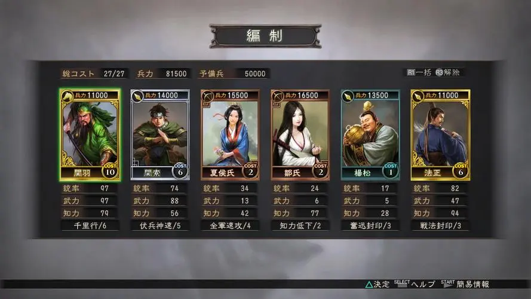

《三国志12》（日文假名：さんごくし・トゥウェルブ，英文名：Sangokushi 12，欧美版英文名：Romance of the Three Kingdoms XII）是日本KOEI（现KOEI TECMO）公司制作的模拟策略类游戏，是《三国志》系列游戏的第12部作品。于2012年3月2日发行，其资料片《威力加强版》发布于2013年3月1日。
与《三国志》系列相同，是描述中国后汉末期的三国时代，刘备和曹操及孙权的这些英雄们群雄割据时代的历史策略模拟游戏，玩家把自己控制的势力以中华统一作为目标向着统一大业而努力。该作与前代相比，简化了战斗与建设，加快了游戏节奏。